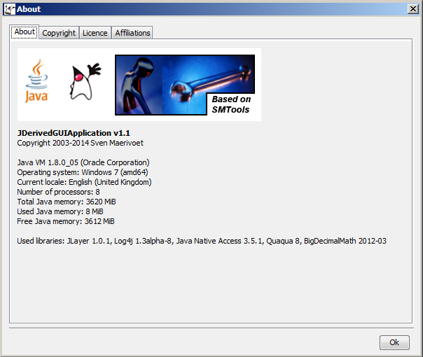
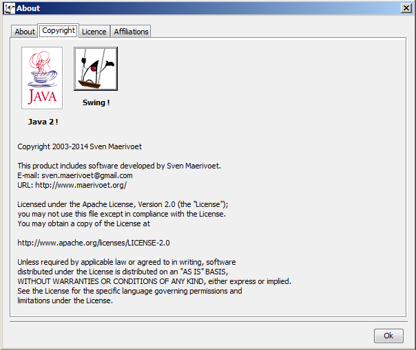
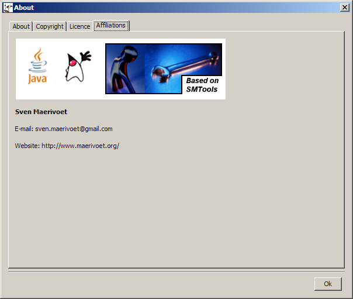

Class JAboutBox
- All Implemented Interfaces:
java.awt.event.ActionListener,java.awt.event.WindowListener,java.awt.image.ImageObserver,java.awt.MenuContainer,java.io.Serializable,java.util.EventListener,javax.accessibility.Accessible,javax.swing.RootPaneContainer,javax.swing.WindowConstants
public class JAboutBox extends JDefaultDialog
JAboutBox class provides a modal dialog box containing general
application information.
Note that a valid I18NL10N database must be available!
The dialog box is modal, non-resizable and contains an "Ok" button to close it. Here's an example of a complete about box (Microsoft Windows L&F):

As seen in the above image, there can be up to four different tabs: the first tab contains the application's logo and its accompanying about text, the second tab contains a copyright notice (see second image below), the third tab contains the licence information (see third image below) and the fourth tab contains the author's affiliations (see third image below).



Typically, JAboutBox is subclassed, with several methods overridden, allow
customisation of each of the previously shown four tabs. The overrideable methods that control
these aspects of the visual layout of the dialog box are:
setupLogo()setupLogoPosition()setupAboutText()setupCopyrightContent()setupLicenceContent()setupAffiliationsLabels()setupUsedLibrariesDescriptions()
In the first tab, the amount of free memory available to the Java Virtual Machine is also shown.
Finally, if either setupCopyrightContent(), setupLicenceContent(),
or setupAffiliationsLabels() returns null, then its corresponding
tab is not shown.
- Version:
- 03/03/2021
- Author:
- Sven Maerivoet
- See Also:
- Serialized Form
-
Nested Class Summary
Nested Classes Modifier and Type Class Description static classJAboutBox.ELogoPositionUseful constants to specify the logo's position relative to its accompanying about text.Nested classes/interfaces inherited from class org.sm.smtools.swing.dialogs.JDefaultDialog
JDefaultDialog.EModality, JDefaultDialog.ESize, JDefaultDialog.ETypeNested classes/interfaces inherited from class javax.swing.JDialog
javax.swing.JDialog.AccessibleJDialogNested classes/interfaces inherited from class java.awt.Dialog
java.awt.Dialog.AccessibleAWTDialog, java.awt.Dialog.ModalExclusionType, java.awt.Dialog.ModalityTypeNested classes/interfaces inherited from class java.awt.Window
java.awt.Window.AccessibleAWTWindow, java.awt.Window.TypeNested classes/interfaces inherited from class java.awt.Container
java.awt.Container.AccessibleAWTContainerNested classes/interfaces inherited from class java.awt.Component
java.awt.Component.AccessibleAWTComponent, java.awt.Component.BaselineResizeBehavior, java.awt.Component.BltBufferStrategy, java.awt.Component.FlipBufferStrategy -
Field Summary
Fields Modifier and Type Field Description protected JARResourcesfResourcesProvides access to an application's resources.Fields inherited from class javax.swing.JDialog
accessibleContext, rootPane, rootPaneCheckingEnabledFields inherited from class java.awt.Dialog
DEFAULT_MODALITY_TYPEFields inherited from class java.awt.Component
BOTTOM_ALIGNMENT, CENTER_ALIGNMENT, LEFT_ALIGNMENT, RIGHT_ALIGNMENT, TOP_ALIGNMENTFields inherited from interface java.awt.image.ImageObserver
ABORT, ALLBITS, ERROR, FRAMEBITS, HEIGHT, PROPERTIES, SOMEBITS, WIDTHFields inherited from interface javax.swing.WindowConstants
DISPOSE_ON_CLOSE, DO_NOTHING_ON_CLOSE, EXIT_ON_CLOSE, HIDE_ON_CLOSE -
Constructor Summary
Constructors Constructor Description JAboutBox(javax.swing.JFrame owner)Constructs aJAboutBoxobject.JAboutBox(javax.swing.JFrame owner, JARResources resources)Constructs aJAboutBoxobject. -
Method Summary
Modifier and Type Method Description protected voidinitialiseClass(java.lang.Object[] parameters)Performs custom initialisation of the about box's member fields.protected voidinitialiseDuringActivation()Performs custom initialisation during the about box's activation.protected java.lang.StringsetupAboutText()Sets up aStringcontaining the about text displayed together with the application's logo.protected java.util.ArrayList<javax.swing.JLabel>setupAffiliationsLabels()Sets up a list ofJLabels containing the author's affiliations.protected java.lang.StringBuildersetupCopyrightContent()Sets up aStringBuildercontaining the short application's copyright notice.protected java.lang.StringBuildersetupLicenceContent()Sets up aStringBuildercontaining the (long) application's licence text (e.g., the Apache Licence).protected javax.swing.JLabelsetupLogo()Sets up aJLabelcontaining the application's logo.protected JAboutBox.ELogoPositionsetupLogoPosition()Sets up anELogoPositionindicating where the application's logo should be relative to its accompanying about text.protected voidsetupMainPanel(javax.swing.JPanel mainPanel)Sets up the about box content area.protected java.lang.StringsetupUsedLibrariesDescriptions()Sets up aStringdescribing the application's used libraries.protected java.lang.StringsetupWindowTitle()Sets up the window title of the about box.Methods inherited from class org.sm.smtools.swing.dialogs.JDefaultDialog
actionPerformed, activate, cancelSelected, disableAutoPositioning, isCancelled, isShown, okSelected, setupInitialDialogSize, updateGUI, windowActivated, windowClosed, windowClosing, windowDeactivated, windowDeiconified, windowIconified, windowOpenedMethods inherited from class javax.swing.JDialog
addImpl, createRootPane, dialogInit, getAccessibleContext, getContentPane, getDefaultCloseOperation, getGlassPane, getGraphics, getJMenuBar, getLayeredPane, getRootPane, getTransferHandler, isDefaultLookAndFeelDecorated, isRootPaneCheckingEnabled, paramString, processWindowEvent, remove, repaint, setContentPane, setDefaultCloseOperation, setDefaultLookAndFeelDecorated, setGlassPane, setJMenuBar, setLayeredPane, setLayout, setRootPane, setRootPaneCheckingEnabled, setTransferHandler, updateMethods inherited from class java.awt.Dialog
addNotify, getModalityType, getTitle, isModal, isResizable, isUndecorated, setBackground, setModal, setModalityType, setOpacity, setResizable, setShape, setTitle, setUndecorated, setVisible, toBackMethods inherited from class java.awt.Window
addPropertyChangeListener, addPropertyChangeListener, addWindowFocusListener, addWindowListener, addWindowStateListener, createBufferStrategy, createBufferStrategy, dispose, getBackground, getBufferStrategy, getFocusableWindowState, getFocusCycleRootAncestor, getFocusOwner, getFocusTraversalKeys, getIconImages, getInputContext, getListeners, getLocale, getModalExclusionType, getMostRecentFocusOwner, getOpacity, getOwnedWindows, getOwner, getOwnerlessWindows, getShape, getToolkit, getType, getWarningString, getWindowFocusListeners, getWindowListeners, getWindows, getWindowStateListeners, isActive, isAlwaysOnTop, isAlwaysOnTopSupported, isAutoRequestFocus, isFocusableWindow, isFocusCycleRoot, isFocused, isLocationByPlatform, isOpaque, isShowing, isValidateRoot, pack, paint, processEvent, processWindowFocusEvent, processWindowStateEvent, removeNotify, removeWindowFocusListener, removeWindowListener, removeWindowStateListener, setAlwaysOnTop, setAutoRequestFocus, setBounds, setBounds, setCursor, setFocusableWindowState, setFocusCycleRoot, setIconImage, setIconImages, setLocation, setLocation, setLocationByPlatform, setLocationRelativeTo, setMinimumSize, setModalExclusionType, setSize, setSize, setType, toFrontMethods inherited from class java.awt.Container
add, add, add, add, add, addContainerListener, applyComponentOrientation, areFocusTraversalKeysSet, doLayout, findComponentAt, findComponentAt, getAlignmentX, getAlignmentY, getComponent, getComponentAt, getComponentAt, getComponentCount, getComponents, getComponentZOrder, getContainerListeners, getFocusTraversalPolicy, getInsets, getLayout, getMaximumSize, getMinimumSize, getMousePosition, getPreferredSize, invalidate, isAncestorOf, isFocusCycleRoot, isFocusTraversalPolicyProvider, isFocusTraversalPolicySet, list, list, paintComponents, print, printComponents, processContainerEvent, remove, removeAll, removeContainerListener, setComponentZOrder, setFocusTraversalKeys, setFocusTraversalPolicy, setFocusTraversalPolicyProvider, setFont, transferFocusDownCycle, validate, validateTreeMethods inherited from class java.awt.Component
add, addComponentListener, addFocusListener, addHierarchyBoundsListener, addHierarchyListener, addInputMethodListener, addKeyListener, addMouseListener, addMouseMotionListener, addMouseWheelListener, checkImage, checkImage, coalesceEvents, contains, contains, createImage, createImage, createVolatileImage, createVolatileImage, disableEvents, dispatchEvent, enableEvents, enableInputMethods, firePropertyChange, firePropertyChange, firePropertyChange, firePropertyChange, firePropertyChange, firePropertyChange, firePropertyChange, firePropertyChange, firePropertyChange, getBaseline, getBaselineResizeBehavior, getBounds, getBounds, getColorModel, getComponentListeners, getComponentOrientation, getCursor, getDropTarget, getFocusListeners, getFocusTraversalKeysEnabled, getFont, getFontMetrics, getForeground, getGraphicsConfiguration, getHeight, getHierarchyBoundsListeners, getHierarchyListeners, getIgnoreRepaint, getInputMethodListeners, getInputMethodRequests, getKeyListeners, getLocation, getLocation, getLocationOnScreen, getMouseListeners, getMouseMotionListeners, getMousePosition, getMouseWheelListeners, getName, getParent, getPropertyChangeListeners, getPropertyChangeListeners, getSize, getSize, getTreeLock, getWidth, getX, getY, hasFocus, imageUpdate, isBackgroundSet, isCursorSet, isDisplayable, isDoubleBuffered, isEnabled, isFocusable, isFocusOwner, isFontSet, isForegroundSet, isLightweight, isMaximumSizeSet, isMinimumSizeSet, isPreferredSizeSet, isValid, isVisible, list, list, list, paintAll, prepareImage, prepareImage, printAll, processComponentEvent, processFocusEvent, processHierarchyBoundsEvent, processHierarchyEvent, processInputMethodEvent, processKeyEvent, processMouseEvent, processMouseMotionEvent, processMouseWheelEvent, remove, removeComponentListener, removeFocusListener, removeHierarchyBoundsListener, removeHierarchyListener, removeInputMethodListener, removeKeyListener, removeMouseListener, removeMouseMotionListener, removeMouseWheelListener, removePropertyChangeListener, removePropertyChangeListener, repaint, repaint, repaint, requestFocus, requestFocus, requestFocus, requestFocus, requestFocusInWindow, requestFocusInWindow, requestFocusInWindow, revalidate, setComponentOrientation, setDropTarget, setEnabled, setFocusable, setFocusTraversalKeysEnabled, setForeground, setIgnoreRepaint, setLocale, setMaximumSize, setMixingCutoutShape, setName, setPreferredSize, toString, transferFocus, transferFocusBackward, transferFocusUpCycleMethods inherited from class java.lang.Object
clone, equals, getClass, hashCode, notify, notifyAll, wait, wait, wait
-
Field Details
-
fResources
Provides access to an application's resources.
-
-
Constructor Details
-
JAboutBox
public JAboutBox(javax.swing.JFrame owner)Constructs aJAboutBoxobject.The about box is inactive at the end of the constructor, so it should explicitly shown using the
JDefaultDialog.activate()method.
It's also modal, has a fixed size and a standard "Ok" button.- Parameters:
owner- the owner of the frame in which this about box is to be displayed
-
JAboutBox
Constructs aJAboutBoxobject.The about box is inactive at the end of the constructor, so it should explicitly shown using the
JDefaultDialog.activate()method.
It's also modal, has a fixed size and a standard "Ok" button.- Parameters:
owner- the owner of the frame in which this about box is to be displayedresources- the parent application's resources that can be accessed by thisJAboutBox
-
-
Method Details
-
setupLogo
protected javax.swing.JLabel setupLogo()Sets up aJLabelcontaining the application's logo.A typical logo can span up to 500x200 pixels (when positioned at the top) or 200x300 pixels (when positioned at the left).
This method returns
nullby default, so in order to obtain a custom logo, the caller should override this method.- Returns:
- a
JLabelcontaining the application's logo
-
setupLogoPosition
Sets up anELogoPositionindicating where the application's logo should be relative to its accompanying about text.See also
JAboutBox.ELogoPosition.The default is
JAboutBox.ELogoPosition.kTop.- Returns:
- an
ELogoPositionindicating the application's logo's position
-
setupAboutText
protected java.lang.String setupAboutText()Sets up aStringcontaining the about text displayed together with the application's logo.In order to have some control over the copyright notice's layout, HTML tags are allowed (except the starting <HTML> and ending </HTML> tags which are implicitly given by the about box).
This method returns
nullby default, so in order to obtain a custom text, the caller should override this method.- Returns:
- a
Stringcontaining the about text
-
setupCopyrightContent
protected java.lang.StringBuilder setupCopyrightContent()Sets up aStringBuildercontaining the short application's copyright notice.In order to have some control over the copyright notice's layout, HTML tags are allowed (except the starting <HTML> and ending </HTML> tags which are implicitly given by the about box).
This method returns
nullby default, so in order to obtain a custom copyright notice, the caller should override this method.If no explicit content is given, the tab containing the copyright notice will not be displayed in the about box.
- Returns:
- a
StringBuffercontaining the application's copyright notice
-
setupLicenceContent
protected java.lang.StringBuilder setupLicenceContent()Sets up aStringBuildercontaining the (long) application's licence text (e.g., the Apache Licence).This method returns
nullby default, so in order to obtain a custom licence text, the caller should override this method.Note that the content should only be plain text without HTML tages.
If no explicit content is given, the tab containing the licence text will not be displayed in the about box.
- Returns:
- a
StringBuffercontaining the application's licence text
-
setupAffiliationsLabels
protected java.util.ArrayList<javax.swing.JLabel> setupAffiliationsLabels()Sets up a list ofJLabels containing the author's affiliations.This method returns
nullby default, so in order to obtain custom affiliations, the caller should override this method.The given affiliations are
JLabels that can contain text and/or images.If no explicit affiliations are given, the tab containing them will not be displayed in the about box.
- Returns:
- a list of
JLabels containing the author's affiliations
-
setupUsedLibrariesDescriptions
protected java.lang.String setupUsedLibrariesDescriptions()Sets up aStringdescribing the application's used libraries.This method returns
nullby default, so in order to obtain custom affiliations, the caller should override this method.- Returns:
- a
Stringdescribing the application's used libraries
-
initialiseClass
protected final void initialiseClass(java.lang.Object[] parameters)Performs custom initialisation of the about box's member fields.Note that this method cannot be overridden!
- Overrides:
initialiseClassin classJDefaultDialog- Parameters:
parameters- internally fixed to the parent application's resources
-
setupWindowTitle
protected final java.lang.String setupWindowTitle()Sets up the window title of the about box.Note that this method cannot be overridden!
- Overrides:
setupWindowTitlein classJDefaultDialog- Returns:
- the window title of the dialog box
-
setupMainPanel
protected final void setupMainPanel(javax.swing.JPanel mainPanel)Sets up the about box content area.Note that this method cannot be overridden!
- Overrides:
setupMainPanelin classJDefaultDialog- Parameters:
mainPanel- the area of the dialog box that is reserved for custom content
-
initialiseDuringActivation
protected final void initialiseDuringActivation()Performs custom initialisation during the about box's activation.Note that this method cannot be overridden!
- Overrides:
initialiseDuringActivationin classJDefaultDialog- See Also:
JDefaultDialog.activate()
-